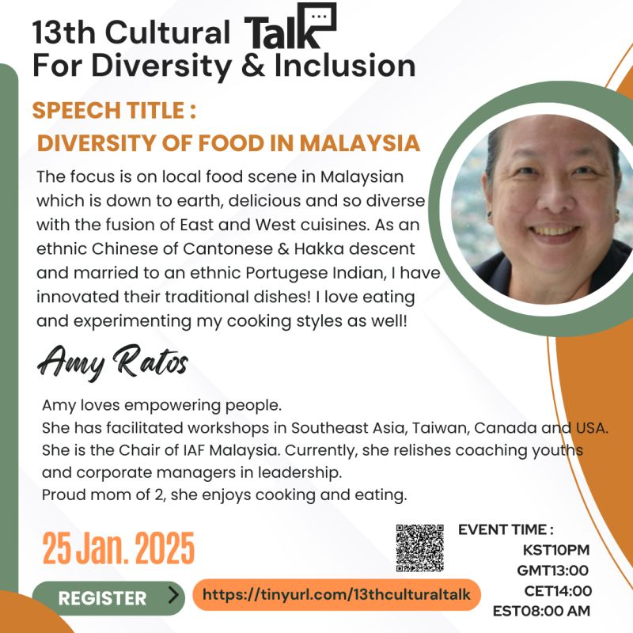
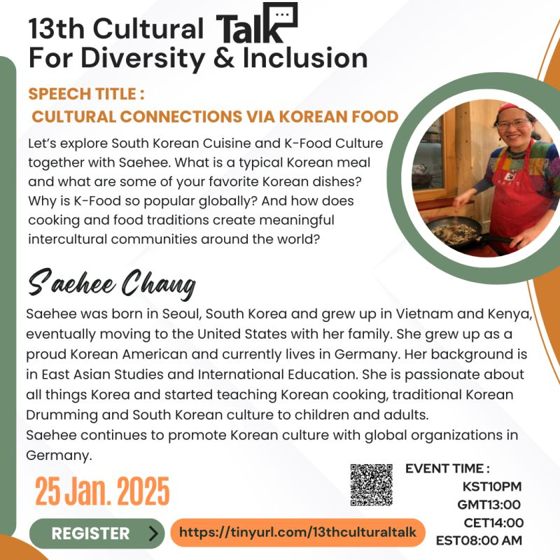

13th Cultural Talk For Diversity
Theme: Food Culture and Its Stories (Malaysia & Korea)

Event Details
Date: 25 January, 2025
Time: 22:00 (KST) / 13:00 (GMT) / 14:00 (CET) / 08:00 (EST)
This event has already taken place and is now part of our archive.
Conference Overview
Food is never only about eating: it carries memory, family, migration, and identity. This session invited participants to look at food culture as a living archive of history and belonging, connecting Malaysian diversity with Korean culinary traditions and the communities they continue to create.

Amy Ratos
Facilitator, coach, and Chair of IAF Malaysia
Amy Ratos is a facilitator and leadership coach who has led workshops across Southeast Asia, Taiwan, Canada, and the United States. She is the Chair of IAF Malaysia and is passionate about empowering people, especially youth and emerging leaders.
Topic: Diversity of Food in Malaysia
Amy introduced Malaysia’s everyday food culture as a rich fusion shaped by multiple communities, histories, and tastes. She also reflected personally on how family heritage and intercultural marriage can inspire new culinary creativity.

Saehee Chang
Korean culture educator and international education specialist
Saehee Chang was born in Seoul, grew up in Vietnam and Kenya, later moved to the United States, and now lives in Germany. Her background in East Asian Studies and international education informs her work teaching Korean cooking, Korean drumming, and South Korean culture to children and adults.
Topic: Cultural Connections via Korean Food
Saehee explored how Korean food and cooking traditions create pathways into culture, community, and intercultural exchange. The talk connected the rise of K-Food with the ways meals, recipes, and food rituals help people build meaningful cross-cultural relationships.